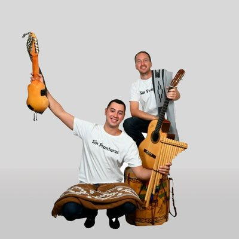

Música popular y folklórica
Sin Fronteras Duo
Recorremos pueblos de Sudamérica tocando zambaas, saya y folclore
Música popular y folklórica
Recorremos pueblos de Sudamérica tocando zambaas, saya y folclore

Somos un dúo de música popular y folklórica que decidimos recorrer pueblo por pueblo Bolivia, Uruguay, Brasil y Argentina. Cuatro meses en Bolivia, las plazas de Cochabamba, los viñedos de Tarija, las calles de La Paz... cada lugar nos da historias nuevas y ganas de seguir.
Nuestras canciones están en todas las plataformas. "Enredados", "Pacto en Zamba", "De la Calle al Escenario"... músicas que nacen en los caminos y se quedan en el corazón de quien las escucha.
Entre despedidas y regresos, nuevos lugares y nuevas emociones. Seguimos girando.
Pronto nuevas fechas.